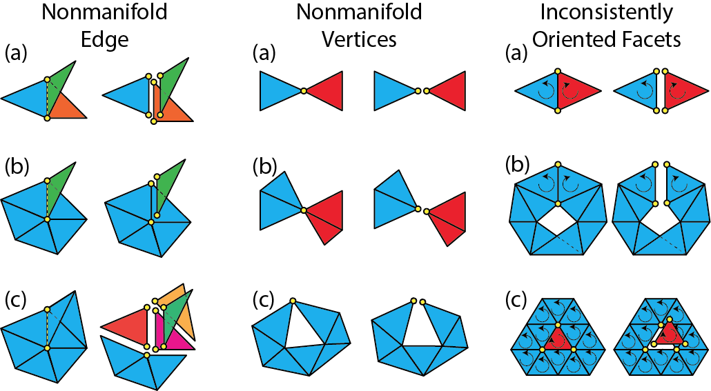

Mesh Cleanup
Legacy Mesh
Documentation on this page relies on our legacy mesh data structure.
Lagrange supports a number of mesh cleanup operations. Typically, a mesh cleanup operation takes an mesh object as input and creates a new Mesh object. For example, all mesh cleanup functions have the same function signature:
auto out_mesh_unique = lagrange::function_name(in_mesh);
Therefore, it is possible to combine mesh cleanup operations by chaining them. Existing vertex/facet/corner attributes can be seamless ported from the input mesh to the output mesh.
Limitation
Edge attribute is not ported at the moment.
Remove Isolated Vertices
An isolated vertex is a vertex that is not adjacent to any facet. It can be
removed with remove_isolated_vertex function:
#include <lagrange/mesh_cleanup/remove_isolated_vertices.h>
auto mesh2_unique = lagrange::remove_isolated_vertices(
mesh);
Remove Duplicate Vertices
Two vertices are considered duplicates if they have exactly the same coordinates. To remove duplicate vertices:
#include <lagrange/mesh_cleanup/remove_duplicate_vertices.h>
auto mesh_unique = lagrange::remove_duplicate_vertices(
mesh);
It is also possible to add an extra condition when checking for vertex duplicates. By specifying a vertex attribute, two vertices are considered duplicates if they have exactly the same coordinates and attribute values. For example:
#include <lagrange/mesh_cleanup/remove_duplicate_vertices.h>
auto mesh2_unique = lagrange::remove_duplicate_vertices(
mesh, "color");
This call will remove all duplicate vertices that have the same coordinates and color as defined by the "color" vertex attribute.
Remove Degenerate Triangles
A triangle is called degenerate if all of its vertices are exactly collinear. Lagrange relies on exact predicates to check collinearity.
#include <lagrange/mesh_cleanup/remove_degenerate_triangles.h>
auto mesh2_unique = lagrange::remove_degenerate_triangles(
mesh);
Remove Topologically Degenerate Triangles
A triangle is called topologically degenerate if two or more of its vertices
are the same topologically. For example, a triangle [1, 1, 2] is
topologically degenerate because two of its vertices are referring to the same
vertex (the vertex with index 1). Topological degeneracy is a special case of
general degeneracy and it is possible to identify it from connectivity alone.
#include <lagrange/mesh_cleanup/remove_topologically_degenerate_triangles.h>
auto mesh2_unique = lagrange::remove_topologically_degenerate_triangles(
mesh);
Remove Short Edges
To remove all edges shorter than a given threshold:
#include <lagrange/mesh_cleanup/remove_short_edges.h>
auto mesh2_unqiue = lagrange::remove_short_edges(
mesh, tol);
where tol is the target edge length threshold.
Remove Duplicate Facets
Two facets are considered duplicates of each other if they are formed by the
combination of vertices. E.g. facet [1, 2, 3] is considered as duplicate of
facet [3, 2, 1]. To remove all duplicate facets:
#include <lagrange/mesh_cleanup/remove_duplicate_facets.h>
auto mesh2_unique = lagrange::remove_duplicate_facets(
mesh);
Note
Facet orientation is not considered. Even thought facet [1, 2, 3]
and [3, 2, 1] have opposite orientations, they are considered as duplicates.
Split Long Edges
It is often that we need to refine a triangular mesh by splitting long edges:
#include <lagrange/mesh_cleanup/split_long_edges.h>
auto mesh2_unique = lagrange::split_long_edges(
mesh, sq_tol, true);
Other than the input mesh, lagrange::split_long_edges takes two more
parameters:
sq_tol: The target edge length squared. All edges longer than this threshold will be split.recursive: Whether to split recursively. Because edge splitting will introduce new edges and these new edges may be longer than the specified threshold. Splitting recursively will guarantee the output mesh contain no edge longer than the specified threshold.
Note
Only long edges are split. This is different from uniform refinement where all edges are split.
Resolve Nonmanifoldness
Lagrange can convert a nonmanifold mesh to a manifold mesh:
#include <lagrange/mesh_cleanup/resolve_nonmanifoldness.h>
auto mesh2_unique = lagrange::resolve_nonmanifoldness(
mesh);
where nonmanifold vertices and edges are "pulled apart".
Implementation details
Here is an illustration describing how Lagrange "pulls apart" nonmanifold vertices and edges:

Convert Quad Mesh To Triangular Mesh
Lagrange also provide handy function to convert a quad to a triangular mesh:
#include <lagrange/quad_to_tri.h>
auto mesh2_unique = lagrange::quad_to_tri(mesh);
Implementation details
Each quad is converted to 2 triangles by inserting one of its diagonals procedurally.
Submesh Extraction
It is often necessary to extract a subset of the facets from a given mesh. Such
operation is supported via lagrange::extract_submesh function:
#include <lagrange/extract_submesh.h>
std::vector<int> selected_facets;
// Populate selected_facets with facet indices.
auto submesh_unique = lagrange::extract_submesh(
mesh, selected_facets);